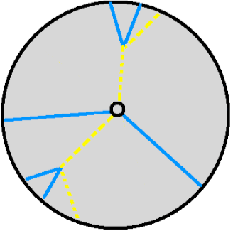
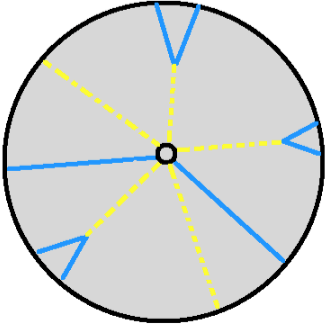

The Standard Model and Beyond
The Standard Model accurately describes every physical interaction ever measured. That makes it so surprisingly to learn that it's wrong.
Foreword
This is the first in a series of posts that describes my PhD research. Although my research is available in other forms (publications, PhD thesis), it is not easily digested by the non-expert. In these posts, I will try to present my research in a simple way. To this end, some physicists may find the descriptions imprecise; but I hope no accuracy is lost in translation.
The Standard Model
Scientists' job is to understand and describe the world around us. Such an explanation is called a Theory. A theory that is limited in scope is an effective theory. The Standard Model is the effective theory of high energy particle physics. It was formulated in the 1970's, and since then all experiments have only corroborated its validity. The Standard Model correctly accounts for all observations made in particle colliders to date, and describes all of the known particles.
So the Standard Model accurately describes all observations made by colliders to date. Why do I add the caveat that it's only an effective theory? Because we know there is more physics out there, waiting to be discovered!
How do we know there's more physics to be discovered? Here are some of our clues:
- Dark matter: Astronomers see too much gravitational attraction within galaxies and between galaxies. Whatever matter is causing this gravitational attraction isn't visible, so we call it dark matter. We believe this matter is made of new particles that have not yet been discovered.
- The Hierarchy Problem: This is a theoretical problem having to do with the mass of the Higgs particle. There are ways to calculate "small corrections" to the Higgs particle's mass. These corrections are 1018 GeV - astronomically larger than the actual, measured mass of the Higgs particle of 125 GeV. The only conceivable reason for the Higgs particle's mass to be so much smaller than the corrections to its calculated mass is if there is some underlying theory that forces these corrections to come in pairs that perfectly cancel one another out. (The popular theory called Supersymmetry postulates a second set of particles that haven't been discovered yet that cause exactly this cancellation.)
Okay, so those are some reasons we expect that the Standard Model doesn't describe all of the matter and interactions in our universe. Since the Standard Model isn't enough, the goal is obvious: we need to find physics that are Beyond the Standard Model.
Exotic Physics: Looking Beyond the Standard Model
Suppose there are new particles to be discovered and new physics theories that describe these particles. How can we detect them? The design of the ATLAS detector is optimized for observing known physics signatures. It isn't necessarly able to detect new particle signatures.
My research was interested in searching for one particular signature of physics that goes beyond the Standard Model. I searched for "pairs of neutral, long-lived particles that decay to quarks or gluons". Let's break this terminology down and explain what it means:
- Neutral: These particles are not charged. After they're created, they travel and will not interact in any way with regular matter. We cannot observe them until they have decayed to something else.
- Long-lived: The particles do not immediately decay. The average particle may travel some appreciable distance in the range of 5-300m before decaying. (Longer distances might be difficult to detect with the ATLAS detector since there would be a high probability of all of the events invisibly leaving the ATLAS detector before decaying.)
- Decay to quarks or gluons: Decays to quarks or gluons creates a shower of particles that radiate outwards from the position of the particle's decay.
- Pairs: The observation of a single long-lived particle may be due to some background. I looked for two long-lived particles in coincidence because the probability of there being two background processes faking a signal at once is greatly reduced.
Although this sounds restrictive, there are actually many theories that predict neutral, long-lived particles that decay to quarks or gluons. So searching for this one signal can help confirm or rule out many theories. Here are simplified diagrams of three theories that include pairs of long-lived, neutral particles:



In the following posts, I will explain how ATLAS looks for signatures of the Standard Model. I will explain why a search for long-lived, neutral particles would by a normal ATLAS search. Finally, I will describe my work that allowed ATLAS to search for these signatures.